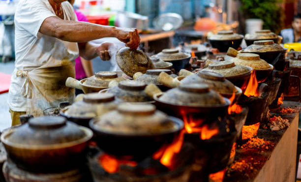
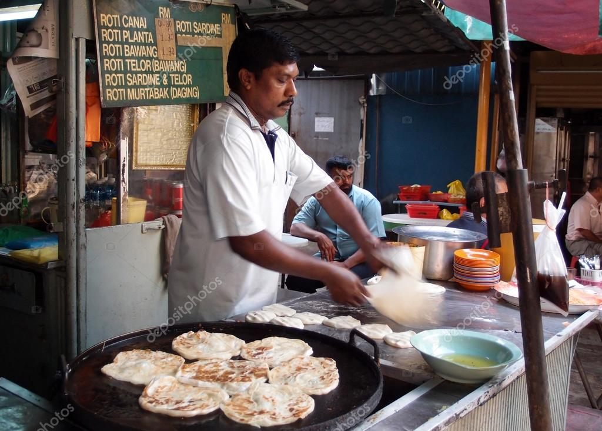
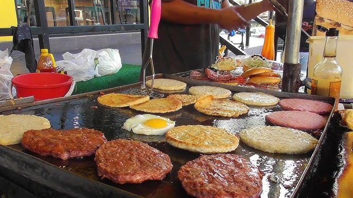

Distinct influences in Malaysia
The country is made up of an ethnic split of Malays (53%),
Chinese (20%) and Indian (6%) but also contains smaller
numbers of Thai, Indonesian, Vietnamese and Cambodian ethnicities. These distinct influences play
their own parts.

1. Chinese influences in Malaysian food
Chinese influences in Malaysian food tend to be very eclectic but like Indian food, represents cooking
traditions of the southern Chinese regions where most immigration came from. Therefore, you’ll find
more Cantonese and Fujian influences in Malaysian food as opposed to the Shandong style of cooking,
for example. Using noodles, bean sprouts, tofu and soy sauce are commonly used in popular Malaysian
dishes like curry laksa, curry mee and a variety of ‘Nyonya‘ (ethnic mix of Chinese and local Malay)
dishes which comprise a Chinese origin with a Malaysian influence.

2. Indian influences in Malaysian food
We see a lot of Indian influence in Malaysian cooking by the way of thick curry sauces made by frying
spices as found in mutton and dhal curry dishes. Historically most Indian immigration into Malaysia came
from south India and dishes like banana leaf curry, rice, pickled vegetables and fruit are evidence of
such south Indian influences. The cow is considered sacred amongst India’s Hindu population and so it’s
common to see more vegetable or fish-based dishes as part of the Indian influence. Ingredients like okra
and purple eggplants, brown mustard, fenugreek and curry leaves are typical south-Indian mainstays in
Malaysian cooking. However, the biggest influences from the south Indian community in Malaysian food is
the use of bread (or roti) like paratha, chapati and naan which are used to dip in curry and sauces as an
accompaniment.

3. Malay influences in Malaysian food
At the heart of Malaysian food is the cooking traditions of the ethnic Malays who make up the majority of
Malaysian society. Ethnic Malay food is steeped in tradition and has been influenced by neighbouring island
countries in all directions including Indonesia, Thailand and Singapore. In the 15th century, the Malay
peninsula became a spice trading hub where merchants from all over the east and even Europe would come to trade.
Ethnic Malay food can vary depending on the region. For instance, northern dishes like Nessi Lemak comprise coconut
cream, rice, cucumber and fish, and are generally lighter. In southern regions like Negeri Sembilan, dishes like
beef rendang tend to be more rich, thick and heavy.